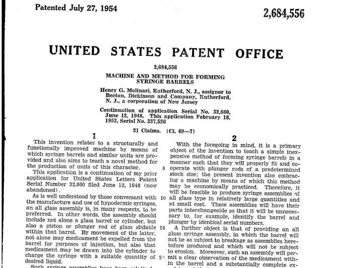
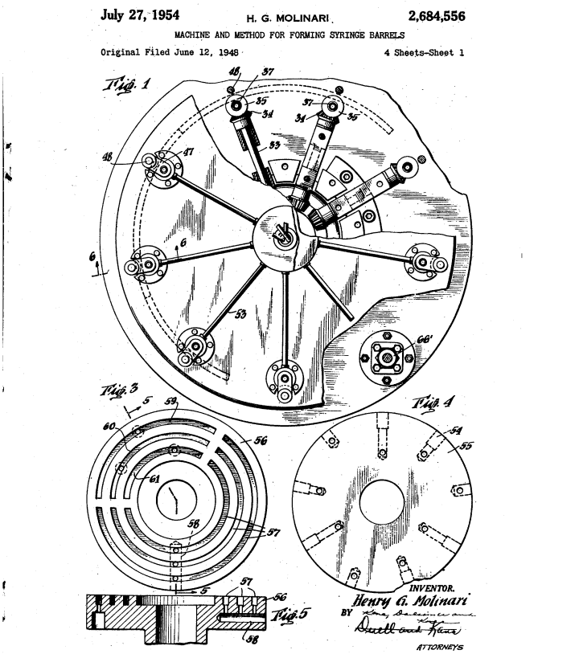
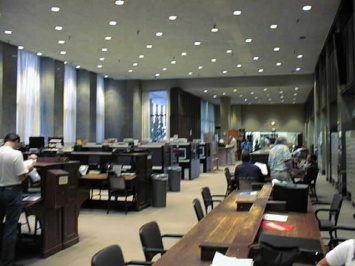
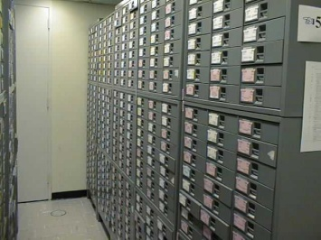
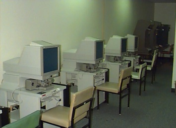

|

sayfanýn tümünü yüksek çözünürlükte görmek için týklayýnýz

bu sayfayý yüksek çözünürlükte görmek için týklayýnýz
Þýrýnga imalatý konusunda, 1954 yýlýnda Becton Dickinson firmasý üzerine alýnmýþ, Henry G. Molinari'ye ait 2,684,556 no'lu patentin 1. ve 5. sayfalarý yukarýda görülmektedir;
Artýk günümüzde, bu patente ve diðer tüm patentlere ABD Patent Ofisi internet sitesinden (www.uspto.gov/patft) yapýlan bir tarama ile kolaylýkla ulaþýlabiliyor.
T.C.'ye Dönüþ:
T.C.'ye dönerken bu patentlere Türkiye'ye en yakýn nerede eriþebileceðimi araþtýrdým. En yakýn Ýsviçre'nin Bern kenti idi. "Vegetable dehydration" (bitki kurutmasý) konusunda bir patent araþtýrmasý için oraya gittiðimde gördüklerim ve öðrendiklerim çok ilginç idi. Gördüðüm, insanlarýn dirsek dirseðe patent etüt ettikleri idi. Öðrendiðim ise; Albert Einstein'in gençlik yýllarýnda o kütüphanede çalýþmýþ olduðu idi. Bern Patent Kütüphanesi'nin adresi "Einstein Strasse, 2" idi. Daha sonra Londra'daki, Münih'teki ve Washington D.C.'deki patent kütüphanelerini de gördüm.
Her neyse...
Bilim ve teknolojiden 1986 yýlýnda sorumlu olan bakana, bilim teknoloji dýþýnda bir konuda, danýþman oldum. Bakan, elektrik mühendisi idi. Dünya'yý tümüyle Türk gözlükleri ile görüyordu. Patentlerin teknolojik bilgilerin yayýlmasýný saðladýðýný söylediðimde bana cevabý "olur mu caným öyle þey? Öyle olsaydý her þey çalýnýrdý!" olmuþtu. O zamanki Ýngilizce'si yetersiz olduðundan patent etüt etmesi imkansýzdý.
Derken kýsa süreli Washington D.C.'ye gitmesi gerekti. Kendisine seyahatine bir gün ilave etmesini, benim de seyahate katýlmamý ve kendisine D.C.'deki patent ofisin kütüphanesini gezdirmemi önerdim. Gördüklerinden sonra hala bana inanmaz ise konuyu bir daha açmayacaðýmý söyledim. Kabul etti.
Washington D.C.'deki Patent Ofisi:
Washington D.C.'deki patent ofisin kütüphanesinin benim gördüklerim arasýnda baþka bir benzeri yoktu. Giriþ bölümünde (takriben 200 metrekare) o güne kadar devrim yaratmýþ teknolojilerin patentlerinin özetleri ve açýklayýcý bilgi sergileniyordu. Enrico Fermi'nýn "Nuclear Reactor" patentinin özet sayfasý ve tarihsel hikayesi diðerleri arasýnda idi. ,
Kütüphane'nin kendisi, adeta, futbol sahasý büyüklüðünde bir salondu. Yerden tavana kadar raflarda 1790 yýlýndan bugüne kadar alýnmýþ ABD patentlerinin kaðýt kopyalarý, düzinelerce fotokopi makinesi, düzinelerce mikrofilm okuyucularý ve ABD patentlerinin mikrofilm kopyalarý... Uzun masalarda insanlar dirsek dirseðe patent araþtýrmasý, etüdü yapýyorlardý (1986'daki manzara).
Washington D.C. yakýnlarýndaki ABD Patent Ofisi eski binasý (Arlington County, Virginia) (Kaynak) |
 |
 |
|
 |
Halka açýk patent araþtýrma ve mikrofilm kütüphanesi, patent dosyalarý, mikrofilm okuyucular... |
|